{kind=link}
The Milkymist One was an experimental hardware appliance for live video effects.
The small 172x145x45mm device creates visualizations similar to those generated by the MilkDrop software, and enables you to mix them with live footage from a camera and interact using MIDI and DMX controllers.
The Milkymist One is programmable and customizable at many different levels.
The simplest way one can use a Milkymist One is by affecting MIDI controls to the existing snippets of code (called "patches") that create the effects. The Milkymist One ships with dozens of pre-existing patches.
Creating new patches can be done with a simple programming language based on the MilkDrop preset format. The Milkymist One device comes with a built-in editor.
Under the hood, the Milkymist One is like a mini-computer running our Flickernoise video synthesis software.
But we did not stop at open source software. As a matter of fact, when this project started in August 2007, one of the goals was to open up chip design. Inside the device, which was launched in September 2011, the Flickernoise software is actually running on an open source CPU part of our own system-on-chip.
Detailed specifications
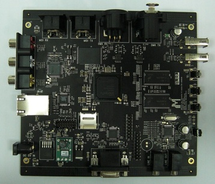- Multi-standard video input (PAL/SECAM/NTSC)
- Two DMX512 (RS485) ports
- MIDI IN and MIDI OUT ports
- VGA output, 24bpp
- AC97 audio
- XC6SLX45 Spartan-6 FPGA supporting the open source Milkymist SoC
- 128MB 32-bit DDR333 SDRAM
- 32MB parallel flash
- 10/100 Ethernet
- Memory card
- Two 12Mbps USB host connectors
- RC-5 compatible infrared receiver
- RS232 debug port
Press
- Create Digital Motion (10/02/2012): Milkymist is Digital Visual Synthesizer and Processor, Built as Sophisticated Open Source Hardware
- MikroBitti (03/2012): Milkymist One -visualisaattori: Avointa vj-rautaa [FI]
- Make Magazine (30/09/2011): Milkymist One, an Open Source VJ Console, Goes on Sale
- The Register (28/09/2011): Open-source hardware group puts out vid system-on-a-chip
- Theory&Practice (22/09/2011): Видеосинтезатор с открытым кодом Milkymist One [RU]
- ETN (17/05/2011): Videoeffekter i öppen hårdvara söker partners [SE]
- Linux-Magazin (28/01/2011): VJ-System Milkymist als Entwicklerboard erhältlich [DE]
- Create Digital Motion (16/08/2010): Milkymist One, All-in-One Open Source VJ Workstation
- Linux-Magazin (29/12/2009): 26c3: Bewegtbildgenerator Milkymist bald mit Ethernet und USB [DE]
Buy a Milkymist One
We are no longer selling Milkymist One. If you want one, you can ask about buying a second-hand unit on the mailing list, or take the open source design files and manufacture it yourself.
Videos
Screenshots
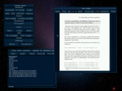 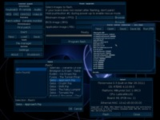{kind=link}
{kind=link}
{kind=link}

{kind=link}
 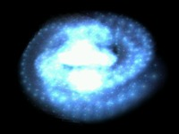
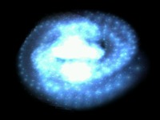
{kind=link}
{kind=link}


 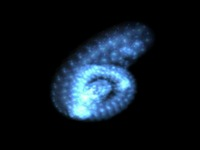
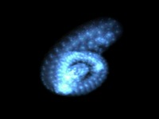
{kind=link}

 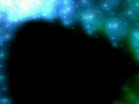
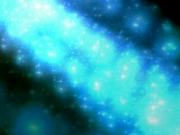
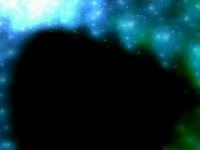
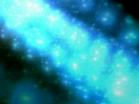
{kind=link}
{kind=link}
{kind=link}

 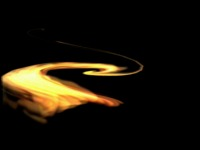
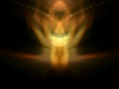
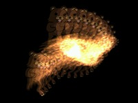
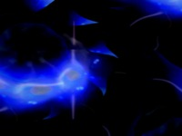
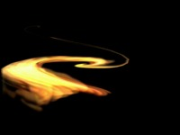
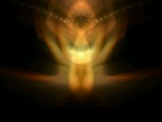
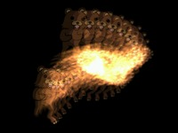
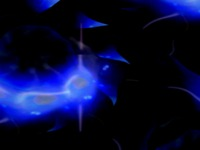
{kind=link}
{kind=link}
{kind=link}
{kind=link}
{kind=link}
{kind=link}
{kind=link}

 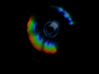
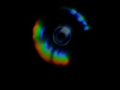
{kind=link}


 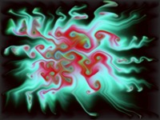
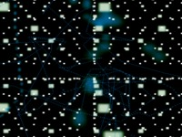
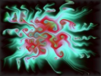
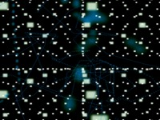
{kind=link}
{kind=link}

 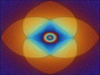
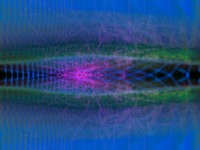
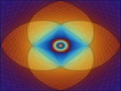
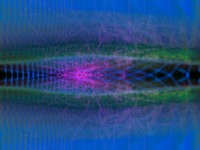
{kind=link}
{kind=link}
{kind=link}
 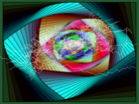
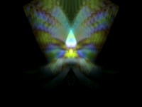
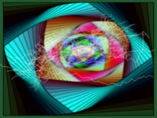
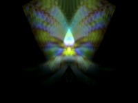
{kind=link}
{kind=link}
 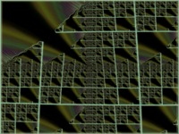
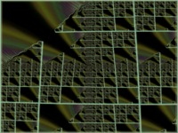
{kind=link}

 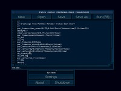
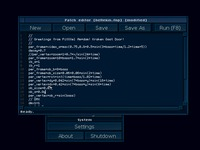
{kind=link}
 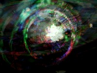
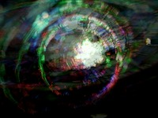
{kind=link}

Milkymist SoC
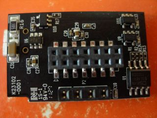 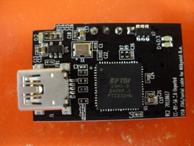
The Milkymist SoC is at the core of the Milkymist One, implemented in the Spartan-6 FPGA.
The Milkymist system-on-chip uses the LatticeMico32 (LM32) core as a general purpose processor. It is a RISC 32-bit big endian CPU without a memory management unit (MMU). It is supported by the GCC compiler and can run RTEMS and uClinux. There is also an experimental back-end for LLVM targeting this microprocessor.
The LM32 microprocessor is assisted by a texture mapping unit and a programmable floating point VLIW coprocessor which are used by the Flickernoise video synthesis software. It is also surrounded by various peripheral cores to support every I/O device of the Milkymist One. The system-on-chip interconnect uses three bridged buses and mixes the Wishbone protocol with two custom protocols used for configuration registers and high performance DMA with the SDRAM.
The architecture of the Milkymist system-on-chip is largely documented in the project founder's Master thesis report. Most components of the system-on-chip, except the LatticeMico32 core, were custom developed and placed under the GNU GPL license.
The QEMU emulator can be used to run and debug Milkymist SoC binaries on another computer.
The SoC source distribution includes software libraries, the BIOS and the demonstration firmware, as well as test benches, LaTeX source for the documentation, build scripts, etc. The repository is hosted by GitHub and is available here.
Milkymist SoC is phased out in favor of the more powerful MiSoC.
Flickernoise
Flickernoise is the video synthesis application developed for the Milkymist One and the Milkymist SoC. It renders hardware-accelerated visual effects comparable (and, to some extent, compatible) with those of MilkDrop 1.x, the popular audio visualization plug-in for Winamp.
Flickernoise allows the creation of visual patches and their connection with all the interfaces that the Milkymist One provides thanks to a built-in graphical user interface. Let the visuals react to sound and MIDI events, connect a camera and create live phantasmagoric images of yourself...
Flickernoise uses:
- The RTEMS real-time operating system.
- The YAFFS flash filesystem (modified version here).
- The libpng, libjpeg, openjpeg and jbig2dec image decompression libraries.
- The freetype font rendering system.
- The MuPDF library for the online help system.
- MTK, a modified version of the Genode FX embedded GUI toolkit, which provides all the elements for common user interaction (windows, buttons, etc.).
- liboscparse, a variant of liblo, for OpenSoundControl communications.
Credits
Thanks to the many people who made Milkymist One possible - in no particular order:
Sebastien Bourdeauducq (founder), Michael Walle (software), Adam Wang (production engineering), Uwe Bonnes, Werner Almesberger, Jon Phillips (evangelist), Yi Zhang (operations), Christophe Devine, Don Miller, John Lejeune, Wim Vandeputte, Xiangfu Liu (software), Wolfgang Spraul, Joachim roh Steiger (mechanical), Yanjun Luo (jtag-serial design), Lars-Peter Clausen, Cristian Paul (early adopter), Christopher Adams (logo design), Christiaan Virant (advice), Takeshi Matsuya (Linux port), Akuei Chen (smt), Anson Lin (layout), Vera Cheng (layout), Terry (pcb), Nick Chen (remote control), Eva Su (sourcing), Sean Xiao (sourcing), Elisha Tseng (xilinx fae), Henry de Beauchesne, Philip Sheu (nor flash), Arno Lin (vga connector), Sun Hung Kuang (jtag-serial smt), Aaron Lee (usb connector), Ruby Su (sourcing), Yunchao Xie (ccd camera), Xiaochun Lu (power supply), Cailin Dai (box design), Mr. Zhang (box making), Xianke Zhang (eva), Xin Cai (label printing), Ting Jiang (sticker making), Xiaopeng Li (silicone keyboard), Mr. Ba (audio, video cables), Dehua Xiao (ethernet cable), Miss Zhao (usb cable), Shen Chun Yi (package pickup Taipei)...
Plus countless workers at dozens of suppliers and many more who created the free technology we were able to build upon.